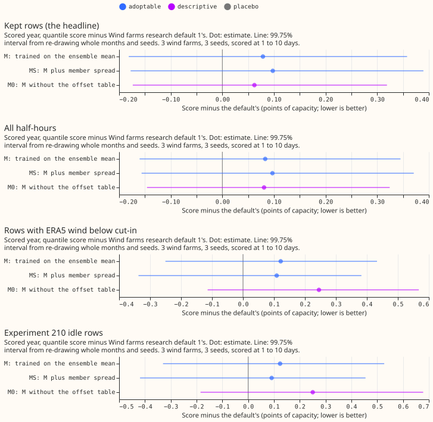
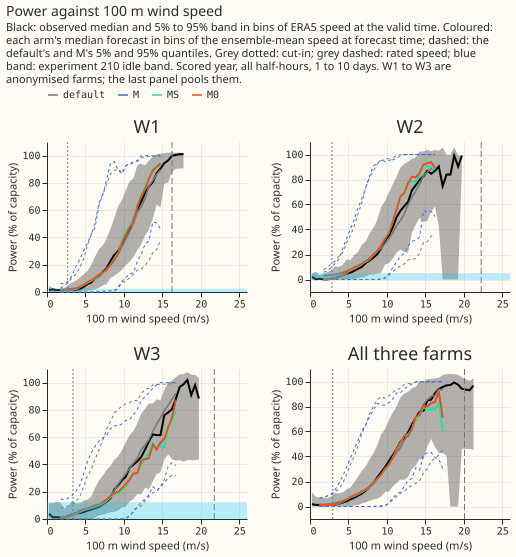
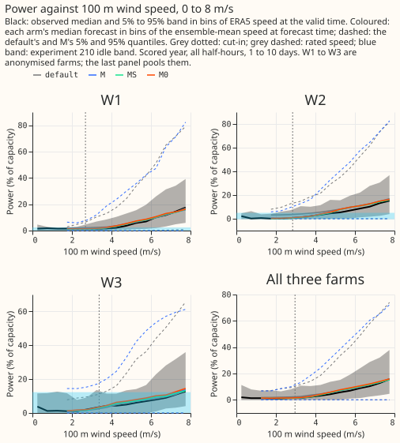
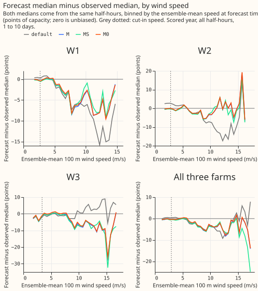

Does training the wind XGBoost model on the ensemble mean beat Wind farms research default 1, and does it shrink the offset table?
Take-home: training the wind XGBoost model on the 51-member ensemble mean (the mean-trained model, M) removes almost all of the need for the offset table, but the forecast does not improve. The offset table (a table of per-quantile corrections, fitted on past forecast errors) improves Wind farms research default 1 (the default) by 0.345 points of capacity and worsens M by 0.017. M scores 11.431 against the default's 11.352 on the kept rows (M minus default +0.079, 95% interval -0.110 to +0.278), which the data cannot tell apart from no difference. M is also worse below the turbines' cut-in speed (+0.122 points) and at the 0.99 quantile (+0.038 points). The hypothesis is not supported, and nothing is adopted.
We asked whether an XGBoost quantile model trained on the ensemble's own history, with each weather column replaced by its mean over the 51 members, would learn the ensemble's wind-speed bias that the default corrects with the offset table. The default is XGBoost trained on ERA5 (the European Centre for Medium-Range Weather Forecasts' past-weather estimates), run on each member, then corrected by the table of experiment 259. The scored sites are the three metered wind farms (W1 to W3, anonymised) at 1 to 10 day leads. Scores are quantile scores in points of capacity (a point is 1% of a farm's capacity; lower is better). The kept rows are the half-hours that the mask of experiment 210 keeps, and the idle rows are the half-hours it drops. Mean training learned most of the bias, since the table changes its score by 0.017 points against 0.345 for the default, and its score stayed within noise of the default's. A mean-trained model with better low-wind behaviour is the open question.

Figures 2 to 4 show the power curves: the forecast against the observed power by wind speed.



Results
- Arms. D: the default, experiment 340's stored refit (reproduction gate: 11.352 points on the kept rows, 0.00004 from experiment 326's figure). M: the same six weather columns on the member mean, trained on the ensemble hindcast (runs of 2024-04-01 to 2025-06-16), three seeds, same hyperparameters, no calendar columns. MS: M plus the member standard deviation of the 100 m and 10 m speeds. M0: M without the table. Mpl: M with the target permuted within the month (the placebo).
- Row set.
fold_a_tuesdays_v1(53 Tuesday runs); the kept rows are the headline. Lead range 1 to 10 days. The hindcast was cross-fitted in three blocks; the scored year comes from a fit on all usable hindcast cases (about 305,000 per farm). - Retraining schedule. One fit per seed, no refits. The contrast could depend on a refit schedule that this experiment did not vary.
| Arm | Kept rows | All half-hours | Below cut-in | Idle rows | Days 1-2 | Days 3-10 | 0.01 pinball, kept | 0.99 pinball, kept |
|---|---|---|---|---|---|---|---|---|
| Default | 11.352 | 10.825 | 5.374 | 6.051 | 6.612 | 11.759 | 0.284 | 0.640 |
| M | 11.431 | 10.908 | 5.496 | 6.174 | 6.670 | 11.861 | 0.289 | 0.678 |
| MS | 11.450 | 10.922 | 5.483 | 6.142 | 6.672 | 11.884 | 0.284 | 0.654 |
| M0 (no table) | 11.414 | 10.906 | 5.619 | 6.301 | 6.670 | 11.858 | 0.291 | 0.781 |
Per farm on the kept rows (default, M): W1 10.96, 11.02; W2 12.28, 12.20; W3 10.80, 11.07. Climatology scores 13.547 on the same rows as the default's 11.352. "Below cut-in" means the half-hours with ERA5 wind speed below the farm's cut-in speed (the speed at which a turbine starts to turn).
- Contrasts on the kept rows (arm minus default; 95% and 99.5% intervals). M +0.079 (-0.110 to +0.278; -0.181 to +0.358). MS +0.098 (-0.100 to +0.305; -0.178 to +0.390). MS minus M +0.019 (-0.035 to +0.073).
- Without one farm (M minus default). Without W1 +0.090, without W2 +0.159, without W3 -0.010. Only W2: -0.080; only W3: +0.269.
- Without the table. M0 scores 11.414 and the default without its table 11.697, so M0 beats the default by 0.28 points before the table is applied (audit).
- Low-wind condition (M minus default). Below cut-in +0.122, idle rows +0.124, all half-hours +0.083. The one-sided 95% upper bounds are 0.30, 0.34, and 0.24, above the 0.1 tolerance.
- Predictions.
- P1 (M trails the default by 0.2 to 1.0) failed: M trails by 0.08.
- P2 (M0 is closer to M than the default without its table is to the default) held: M0 minus M is -0.017, against 0.345 for the default.
- P3 (MS beats M by at least 0.05 at the 0.95 and 0.99 pinball losses, and is no better on the median) failed: MS beats M by 0.032 at 0.95 and 0.024 at 0.99, both under 0.05, and is worse on the median absolute error (+0.085).
- Adoption. M and MS fail condition 1 (intervals include zero, estimates positive), condition 2 (low-wind upper bounds above 0.1; M also fails the 0.99 pinball bound, 0.066 against 0.05), and condition 3 (replicate period M minus default +0.241).
- Controls. The reproduction gate, the known-answer test (planted power curve recovered with a mean absolute error of 0.006 against 0.33 for the permuted placebo), the leakage check (latest hindcast valid time 2025-06-16, earliest scored 2025-07-01), and the placebo Mpl (+2.509, much worse) all behaved as they should.
Checks
- Median minus mean forecast, kept rows, points of capacity: default -4.81, M -5.07, MS -5.18.
- Error of the mean forecast beside the contrast: mean absolute error +0.068 for M and +0.076 for MS against the default, the same direction as the quantile score.
- Triggers that fired: trigger 2 (a result contradicts its own prediction: M trails by 0.08, not 0.2 to 1.0) and trigger 4 (leaving out W3 changes the sign of M minus default). A Sonnet audit ran, as the brief required in place of Opus; its findings follow.
- Replicate caveat. The replicate reuses the out-of-fold quantiles, whose fold models saw later runs, so the replicate favours M; M is still worse there.
Audit findings
- The contrast reproduces from the stored quantiles: M minus default is +0.077, +0.079, and +0.079 for the three seeds, on identical rows and actuals. No leakage was found; the table is fitted on out-of-fold quantiles only.
- The table decides the sign. Without the table M0 beats the default by 0.28 points; the table helps the default by 0.345 and slightly harms M. The default needs the table to remove an ERA5 training bias that M never had.
- The W3 sign flip is a farm-and-season effect, not a table artefact. Per-farm contrasts are W1 +0.058, W2 -0.080, and W3 +0.269. Both arms have one table per farm and lead day. The W3 gap sits in October to December 2025 (+1.48, +1.71, +0.70 points); the other nine W3 months average about -0.07. M is worse at lead days 6 to 10 on every farm (+0.13 overall, +0.30 at W3).
- Reading. Three farms and 12 months cannot tell a farm difference from one bad quarter. The result is a null (monthly t test p = 0.48), not a refutation.
Caveats
- M trains on 15 months of ensemble runs and the default on 4.4 years of ERA5; the history length is not separated from the training source.
- The spread factor and the table are fitted on quantiles from models trained on two thirds of the hindcast and applied to a model trained on all of it, which biases against M and MS.
- The placebo's permutation includes unusable hindcast cases whose target is set to zero, so the placebo is a worse model than intended; it still fails to gain, as a placebo should.
- The "only inputs available at forecast time" part of condition 5 and the "no unresolved audit trigger" part of condition 4 are asserted by hand.
What to try next
- Mean training with ERA5 pre-training, then fine-tuning on the ensemble hindcast, to separate the training source from the history length.
- A low-wind correction for M, since the harm below cut-in is the failed condition (see experiment 340).
Plan (as committed before any score)
- Arms. D: the default (stored refit, reproduction gate). M: the same six weather columns as the default, on the 51-member mean of each column (sine and cosine of direction averaged, as the columns are), trained on the ensemble hindcast (2024-04-01 to 2025-06-16 runs, one row per run and valid time), same quantile loss, 500 rounds, eta 0.05, depth 6, binned-curve base margin. MS: M plus the member standard deviation of the 100 m speed and of the 10 m speed (the 10 m speed is the column other than the 100 m speed with the highest gain in the default, in all three farms). M0: M without the offset table, descriptive and never adopted. No calendar columns, no lead column, three seeds.
- Cross-fitting. The hindcast is both the training set and the set that fits the spread factor and the offset table, so M and MS are cross-fitted in three blocks of consecutive run dates as in experiment 303: the hindcast quantiles come from models fitted without the held-out block and the runs whose valid times overlap it. The scored year comes from a model fitted on all usable hindcast cases.
- Reuse. Scoring, the kept rows, the low-wind subsets, the replicate, and the spread factor and offset table follow experiments 340, 326, and 303 (imported, read only).
- Predictions that can fail: P1, P2, and P3 above.
- Five triggers: stored: private scored quantiles; serving path: no; degradation rule: no; designs: arms fixed by the brief; callers: this folder's scripts. Medium.
- Ensemble-mean training is a lab condition for serving: the mean of 51 members is available at forecast time, so condition 5 holds.
- Triage of the plan review (all applied before any score).
- The spread factor and the offset table are fitted only on out-of-fold hindcast quantiles (held-out block, with training cases whose valid times fall inside the block's range removed, asserted in the fit). They are applied to the model fitted on all usable hindcast cases, which has seen about 50% more rows than the fold models; this mismatch biases against M and MS.
- The spread factor is experiment 33's rule applied to the model's own single set of quantiles (no member mixture exists for M), fitted month by month on earlier cases.
- The replicate (2025-01 to 2025-06 runs) reuses the out-of-fold quantiles with the table fitted on valid times before 2025-01. The fold models were trained on later runs, so the replicate favours M and MS; condition 3 is read with that caveat.
- P2 is |M0 - M| < |default without table - default| on the kept rows, with the default's
table-free score from experiment 340's
default_notable. P3 reads "no better on the median" as a median pinball difference above -0.02 points. - All arms use
colsample1.0 (the settings of experiment 230); MS has eight columns against six, which is part of the arm. The default trains on 4.4 years of ERA5 and M on 15 months of ensemble runs; the write-up says the history length is not separated. - The default uses experiment 340's three seeds and their mean score; M and MS use seeds 0 to 2.
- The default's gain per column (seed 0, W1 to W3): the 10 m speed is the highest column other than the 100 m speed (0.050, 0.051, 0.036 against 0.050, 0.054, 0.068 for the 100 m speed).
- MS is tested only if M fails a condition, and need not beat M. Level 99.5% for both.
- Controls: known-answer test (planted power curve recovered from synthetic members, mean absolute error under 0.03), placebo Mpl (target permuted across cases within the month, must not gain), leakage assertion in the fit (no training valid time inside a held-out block's range; latest hindcast valid time before the earliest scored valid time).